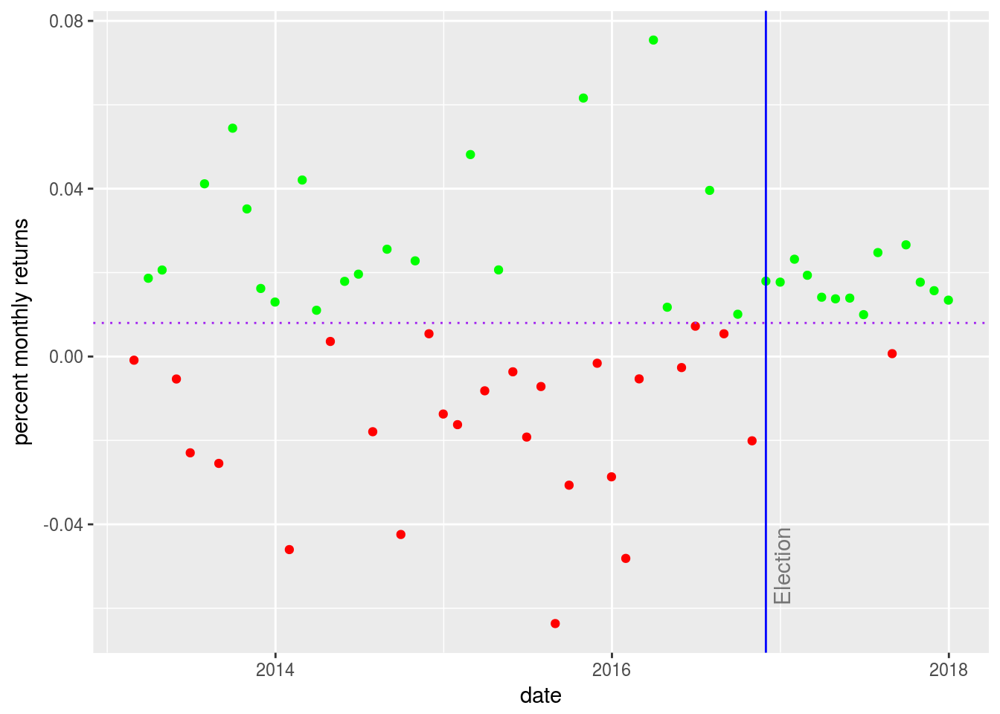
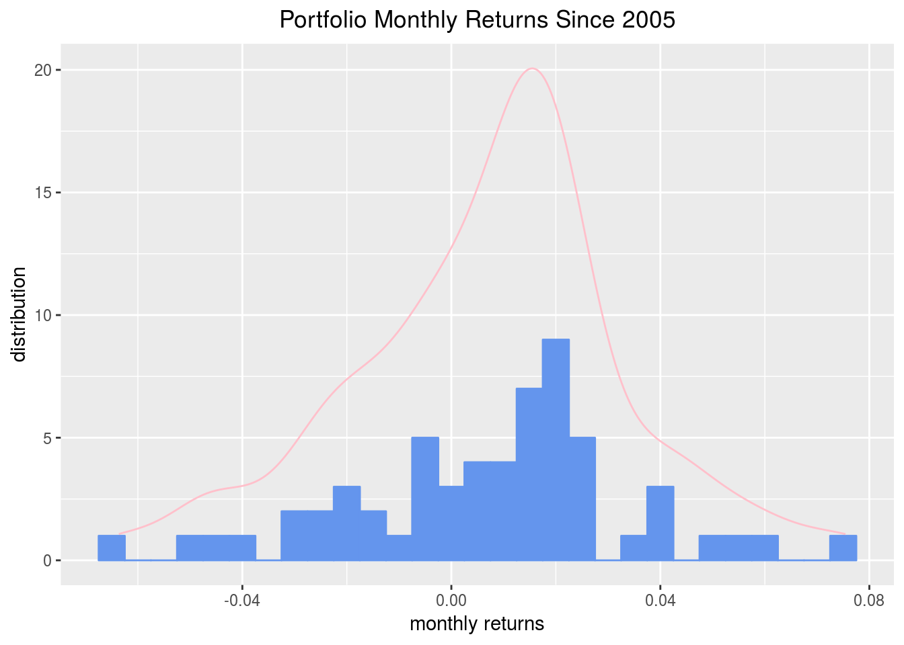
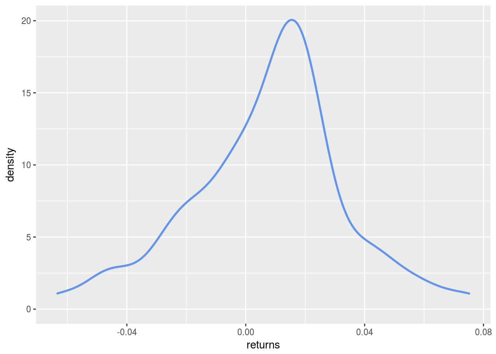
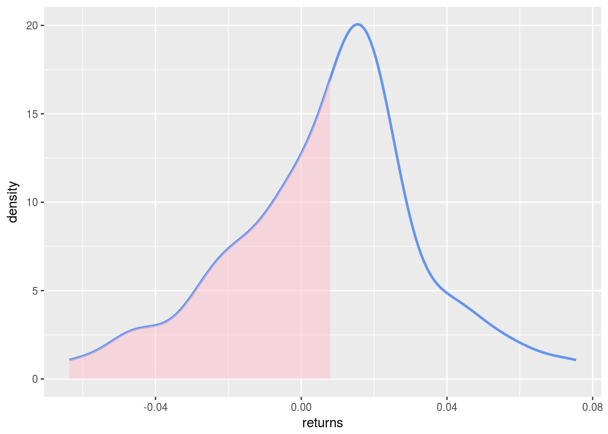

Chapter 2 To the Portfolio Station
We spent a lot of time on the invidual assets to make sure we had a good grasp of our data building blocks.
Now, we turn our collection of individual returns into a portfolio, which is really a weighted collection of asset returns. Accordingly, the first thing we need to do is assign a weight to each asset. Recall that our vector of symbols is SPY, EFA, IJS, EEM, AGG. Let’s create a weights vector that will allow us to assign a weight to each of our symbols. We are going for a balanced portfolio and will weight relatively little to AGG, the bond fund.
w <- c(0.25, 0.25, 0.20, 0.20, 0.10)Before we use the weights in our calculations, a quick sanity check in the next code chunk is a good idea. This might not be necessary with 5 assets as we have today, but good practice because if we had 50 assets it could save us a lot of grief to catch a mistake early.
asset_weights_sanity_check <- tibble(w, symbols)
asset_weights_sanity_check## # A tibble: 5 x 2
## w symbols
## <dbl> <chr>
## 1 0.250 SPY
## 2 0.250 EFA
## 3 0.200 IJS
## 4 0.200 EEM
## 5 0.100 AGGDoes that tibble match up with the portfolio we want to create? Looks good to me.
Finally, make sure the weights sum to 100%, or 1. Again, we can eyeball this with 5 assets, but with 50 assets it would be easier to run the sanity check.
sum(asset_weights_sanity_check$w)## [1] 1All looks good.
Now let’s code up some portfolio returns.
The textbook equation for the return of a multi-asset portfolio is: \[Return_{portfolio} = W_{1}*Return_{asset1}~+~W_{2}*Return_{asset2}~+~W_{3}*Return_{asset3}~+~W_{4}*Return_{asset4}~+~W_{5}*Return_{asset5}\] where the W’s stand for the weights of each asset.
Let’s implement that equation with R code. First, we assign weights to variables according to our weights vector w.
w_1 <- w[1]
w_2 <- w[2]
w_3 <- w[3]
w_4 <- w[4]
w_5 <- w[5]We can assign returns by pulling out columns form the asset_returns_xts object.
asset1 <- asset_returns_xts[,1]
asset2 <- asset_returns_xts[,2]
asset3 <- asset_returns_xts[,3]
asset4 <- asset_returns_xts[,4]
asset5 <- asset_returns_xts[,5]Now let’s use the weights and returns in the equation and glance at the first few rows.
portfolio_returns_byhand <-
(w_1 * asset1) +
(w_2 * asset2) +
(w_3 * asset3) +
(w_4 * asset4) +
(w_5 * asset5)
names(portfolio_returns_byhand) <- "returns"
head(portfolio_returns_byhand)## returns
## 2013-02-28 -0.0008696
## 2013-03-28 0.0186624
## 2013-04-30 0.0206249
## 2013-05-31 -0.0053530
## 2013-06-28 -0.0229488
## 2013-07-31 0.0411706tail(portfolio_returns_byhand)## returns
## 2017-07-31 0.024782
## 2017-08-31 0.000689
## 2017-09-29 0.026625
## 2017-10-31 0.017723
## 2017-11-30 0.015699
## 2017-12-29 0.013443Our by-hand method is complete. We now have portfolio returns starting on February 28, 2013 through December 29, 2017. Let’s confirm we get the same results with the built-in methods.
Portfolio Returns in the xts world
For our first built-in method, we will stay in the xts world and use the Return.portfolio() function from the PerformanceAnalytics package. The function requires two arguments for a portfolio, an xts object of returns and a vector of weights. It’s not necessary but we are also going to set rebalance_on = "months" so we can confirm it matches our by hand calculations above. Remember, in the by-hand equation, we set the portfolio weights as fixed, meaning they never changed on a month-to-month basis. That is equivalent to rebalancing every month. In practice, that would be quite rare. Once we confirm that it matches our by hand, we can toggle over to a more realistic annual rebalancing by changing the argument to rebalance_on = "years".
portfolio_returns_xts_rebalanced_monthly <-
Return.portfolio(asset_returns_xts, weights = w, rebalance_on = "months") %>%
`colnames<-`("returns")Let’s use the built-in Return.portfolio function again but we will set a more realistic annual rebalancing with the argument rebalance_on = "years". This will change our results so that they no longer our by-hand calculation, which effectiely rebalanced every month.
portfolio_returns_xts_rebalanced_yearly <-
Return.portfolio(asset_returns_xts, weights = w, rebalance_on = "years") %>%
`colnames<-`("returns")We can take a peek at our three portfolio objects and see how the annual rebalance made a small but important difference to our monthly returns.
head(portfolio_returns_byhand)## returns
## 2013-02-28 -0.0008696
## 2013-03-28 0.0186624
## 2013-04-30 0.0206249
## 2013-05-31 -0.0053530
## 2013-06-28 -0.0229488
## 2013-07-31 0.0411706head(portfolio_returns_xts_rebalanced_monthly)## returns
## 2013-02-28 -0.0008696
## 2013-03-28 0.0186624
## 2013-04-30 0.0206249
## 2013-05-31 -0.0053530
## 2013-06-28 -0.0229488
## 2013-07-31 0.0411706head(portfolio_returns_xts_rebalanced_yearly)## returns
## 2013-02-28 -0.0008696
## 2013-03-28 0.0189331
## 2013-04-30 0.0204345
## 2013-05-31 -0.0044738
## 2013-06-28 -0.0218914
## 2013-07-31 0.0425168Do you notice where the annual rebalancing made a difference? It’s an important decision for our portfolio.
As before, we could stop here and have accomplished our substantive task (twice already - by-hand and using the built-in function), but we want to explore alternate methods in the world of tidyverse and tidyquant.
Portfolio Returns in the tidyverse
We have our tidy object of asset returns and we need to add a weights column to it using the mutate() function. Each asset should be weighted according to the w vector. We can nested if_else() statements for this to make sure our weights match our assets.
portfolio_returns_dplyr_byhand <-
asset_returns_long %>%
group_by(asset) %>%
mutate(weights = if_else(asset == symbols[1], w[1],
if_else(asset == symbols[2], w[2],
if_else(asset == symbols[3], w[3],
if_else(asset == symbols[4], w[4], w[5])))))
portfolio_returns_dplyr_byhand## # A tibble: 295 x 4
## # Groups: asset [5]
## date asset returns weights
## <date> <chr> <dbl> <dbl>
## 1 2013-02-28 SPY 0.0127 0.250
## 2 2013-03-28 SPY 0.0373 0.250
## 3 2013-04-30 SPY 0.0190 0.250
## 4 2013-05-31 SPY 0.0233 0.250
## 5 2013-06-28 SPY -0.0134 0.250
## 6 2013-07-31 SPY 0.0504 0.250
## 7 2013-08-30 SPY -0.0305 0.250
## 8 2013-09-30 SPY 0.0312 0.250
## 9 2013-10-31 SPY 0.0453 0.250
## 10 2013-11-29 SPY 0.0292 0.250
## # ... with 285 more rowsWe have weights and returns lined up, now we need to implement the equation above. This one is a bit tricky but we’ll need to group_by() the date column before using arithmetic. That’s because each of our weighted returns needs to be added together for each date. Once we group by date, we can use summarise(total = sum(weighted_returns)) to add up the monthly weighted returns.
portfolio_returns_dplyr_byhand <-
asset_returns_long %>%
group_by(asset) %>%
mutate(weights = if_else(asset == symbols[1], w[1],
if_else(asset == symbols[2], w[2],
if_else(asset == symbols[3], w[3],
if_else(asset == symbols[4], w[4], w[5])))),
weighted_returns = returns * weights) %>%
group_by(date) %>%
summarise(port_returns = sum(weighted_returns))
portfolio_returns_dplyr_byhand## # A tibble: 59 x 2
## date port_returns
## <date> <dbl>
## 1 2013-02-28 -0.000870
## 2 2013-03-28 0.0187
## 3 2013-04-30 0.0206
## 4 2013-05-31 -0.00535
## 5 2013-06-28 -0.0229
## 6 2013-07-31 0.0412
## 7 2013-08-30 -0.0255
## 8 2013-09-30 0.0544
## 9 2013-10-31 0.0352
## 10 2013-11-29 0.0162
## # ... with 49 more rowsThat piped workflow required some logical hoops - it isn’t very smooth frankly but useful to see how to add those weights and then group by the date for finding total returns. Think about how we would solve the puzzle of rebalancing weights not every month, but every year?
Portfolio Returns in the tidyquant World
First, we will use our long, tidy formatted asset_returns_long and convert to portfolio returns using the tq_portfolio function from tidyquant.
The tq_portfolio function takes a tibble and then asks for an assets column to group by, a returns column to find return data, and a weights vector It’s a wrapper for Return.portfolio() and thus also accepts the argument rebalance_on = "months". Since we are rebalancing by months, we should again get a portfolio returns object that matches our two existing objects portfolio_returns_byhand and portfolio_returns_xts_rebalanced_monthly.
portfolio_returns_tq_rebalanced_monthly <-
asset_returns_long %>%
tq_portfolio(assets_col = asset,
returns_col = returns,
weights = w,
col_rename = "returns",
rebalance_on = "months")If we want to rebalance annually, it’st the same code as above, except we set rebalance_on = "years".
portfolio_returns_tq_rebalanced_yearly <-
asset_returns_long %>%
tq_portfolio(assets_col = asset,
returns_col = returns,
weights = w,
col_rename = "returns",
rebalance_on = "years")We now have two more portfolio returns objects and they are both tidy tibbles. Let’s take a quick look and compare how a tidy tibbles of portfolio returns compare to the xts object of portfolio returns.
head(portfolio_returns_byhand)## returns
## 2013-02-28 -0.0008696
## 2013-03-28 0.0186624
## 2013-04-30 0.0206249
## 2013-05-31 -0.0053530
## 2013-06-28 -0.0229488
## 2013-07-31 0.0411706head(portfolio_returns_dplyr_byhand)## # A tibble: 6 x 2
## date port_returns
## <date> <dbl>
## 1 2013-02-28 -0.000870
## 2 2013-03-28 0.0187
## 3 2013-04-30 0.0206
## 4 2013-05-31 -0.00535
## 5 2013-06-28 -0.0229
## 6 2013-07-31 0.0412head(portfolio_returns_tq_rebalanced_monthly)## # A tibble: 6 x 2
## date returns
## <date> <dbl>
## 1 2013-02-28 -0.000870
## 2 2013-03-28 0.0187
## 3 2013-04-30 0.0206
## 4 2013-05-31 -0.00535
## 5 2013-06-28 -0.0229
## 6 2013-07-31 0.0412head(portfolio_returns_xts_rebalanced_monthly)## returns
## 2013-02-28 -0.0008696
## 2013-03-28 0.0186624
## 2013-04-30 0.0206249
## 2013-05-31 -0.0053530
## 2013-06-28 -0.0229488
## 2013-07-31 0.0411706Huzzah, we have four objects of portfolio returns, calculated in four different ways, and with the same results.
As we move on to visualization, we will make use of those different objects for our different visualization techniques.
Visualizing Portfolio Returns
As before, let’s start wiht highcharter to visualize the xts formatted portfolio returns.
As we noted when looking at individual asset returns, highcharter is fantastic for visualizing a time series or many time series. First, we set highchart(type = "stock") to get a nice time series line. Then we add our returns column from the portfolio returns xts object. We don’t have to add the date index or point to it in any way because highcharter recognizes the xts object and ports over the date index under the hood. The code below should look familiar from our work on asset returns.
highchart(type = "stock") %>%
hc_title(text = "Porftolio Monthly Returns") %>%
hc_add_series(portfolio_returns_xts_rebalanced_monthly$returns,
name = "Rebalanced Yearly", color = "cornflowerblue") %>%
hc_add_theme(hc_theme_flat()) %>%
hc_navigator(enabled = FALSE) %>%
hc_scrollbar(enabled = FALSE)As before, we can use highcharter for histogram making, with the same code flow.
hc_portfolio <- hist(portfolio_returns_xts_rebalanced_monthly$returns, breaks = 50, plot = FALSE)
hchart(hc_portfolio) %>%
hc_title(text = "Portfolio Returns Distribution")As we noted in the previous section on asset returns, there’s nothing wrong with that highcharter histogram. It displays well the distribution of portfolio returns. It does not, however, offer as much flexibility as ggplot for adding other distributions or density lines to the same chart.
For that, we will head to the tidyverse and use ggplot on our tidy tibble portfolio_returns_tq_rebalanced_monthly.
portfolio_returns_tq_rebalanced_monthly %>%
ggplot(aes(x = returns)) +
geom_histogram(binwidth = .005, fill = "cornflowerblue", color = "cornflowerblue") +
ggtitle("Portfolio Returns Distribution") +
theme_update(plot.title = element_text(hjust = 0.5))
ggplot() makes it seemless to layer on other distributions. Let’s compare the portfolio distribution to those of our individual assets. Use the alpha argument to make the asset histograms a bid faded, since there are more of them and the portfolio return is what we really want to see.
asset_returns_long %>%
ggplot(aes(x = returns, fill = asset)) +
geom_histogram(alpha = 0.15, binwidth = .01) +
geom_histogram(data = portfolio_returns_tq_rebalanced_monthly, fill = "cornflowerblue") +
ggtitle("Portfolio and Asset Monthly Returns Since 2005")
Let’s turn to a new chart format and build a scatterplot of portfolio returns. I would like to see the returns over time so will put the date on the x-axis with ggplot(aes(x = date)). We put monthly returns on the y-axis with geom_point(aes(y = returns), color = "cornflowerblue").
portfolio_returns_tq_rebalanced_monthly %>%
ggplot(aes(x = date)) +
geom_point(aes(y = returns), color = "cornflowerblue")
Maybe we don’t want to use a histogram or scatterplot, but instead want to use a density line to visualize the portfolio returns distributions. We can use the stat_density(geom = "line", alpha = 1) function to do this, as we did before. The alpha argument is selecting a line thickness. Let’s also add a label to the x and y axis with the xlab and ylab functions.
portfolio_returns_tq_rebalanced_monthly %>%
ggplot(aes(x = returns)) +
stat_density(geom = "line", alpha = 1, colour = "cornflowerblue") +
ggtitle("Portfolio Monthly Returns Since 2005") +
xlab("monthly returns") +
ylab("distribution") 
Now let’s put the portfolio returns histogram and density on one plot. We do that by layering our geoms. First we call geom_histogram(binwidth = .005, colour = "cornflowerblue", fill = "cornflowerblue") then we add another layer with stat_density(geom = "line", alpha = 1, color = "pink").
portfolio_returns_tq_rebalanced_monthly %>%
ggplot(aes(x = returns)) +
geom_histogram(binwidth = .005, colour = "cornflowerblue", fill = "cornflowerblue") +
stat_density(geom = "line", alpha = 1, color = "pink") +
xlab("monthly returns") +
ylab("distribution") +
theme_update(plot.title = element_text(hjust = 0.5)) +
ggtitle("Portfolio Monthly Returns Since 2005") 
We have done a lot of work to visualize this portfolio. Now let’s build a Shiny application and enable end users to make their own decisions.
Our First Shiny App: Portfolio Returns
A Shiny application is a flexible, useful and powerful way to share our work. In this section, we will build a Shiny app to display portfolio returns using the various visualization frameworks above.
We want to empower an end user to do the following:
- choose tickers and portfolio weights
- choose a start date
- choose a rebalancing frequency
- calculate portfolio returns
- visualize the portfolio returns on a scatterplot, histogram and density chart
The final app and full source code can be seen here:
www.reproduciblefinance.com/shiny/returns-distribution/
And here is a snapshot

FIGURE 2.1: Returns Distribution Shiny App
The application encompasses much of our work thus far as it requires importing daily price data, converting to monthly log returns, assigning portfolio weights, calculating portfolio returns, and visualizing with ggplot. This makes our work more flexible since the user can construct any 5-asset portfolio for which there’s data in our data source. And, the number 5 is for illustrative purposes. Our app could easily support 50 assets (though consider the user experience there - will anyone manually enter 50 ticker symbols? They would probably want to upload a csv file - a different challenge for us).
Let’s get to the code.
We will use Rmarkdown to build our Shiny applications by inserting into the yaml runtime: shiny. This will alert the server (or our laptop) that this is an interactive document. The yaml also gives us a space for the title.
---
title: "Returns Shiny"
runtime: shiny
output:
flexdashboard::flex_dashboard:
orientation: rows
---As with other R scripts, we’ll need to load the necessary packages.
library(tidyverse)
library(highcharter)
library(tidyquant)
library(timetk)With the logistics out of the way, our first task is to build an input sidebar and enable users to choose five stocks and weights.
We will use textInput("stock1",...)) to create a space where the user can type a stock symbol and we will use numericInput("w1",...) to create a space where the user can enter a numeric weight. We want those entry spaces to be on the same line or row so we will nest them inside of a call to fluidRow()
Since we have 5 stocks and weights, we repeat this 5 times. Notice that the stock symbol field uses textInput() because the user needs to enter text and the weight field uses numericInput() because the user needs to enter a number. I highly recommend taking a quick look at the app but there’s also a screenshot below.
fluidRow(
column(6,
textInput("stock1", "Stock 1", "SPY")),
column(5,
numericInput("w1", "Portf. %", 25, min = 1, max = 100))
)
fluidRow(
column(6,
textInput("stock2", "Stock 2", "EFA")),
column(5,
numericInput("w2", "Portf. %", 25, min = 1, max = 100))
)
fluidRow(
column(6,
textInput("stock3", "Stock 3", "IJS")),
column(5,
numericInput("w3", "Portf. %", 20, min = 1, max = 100))
)
fluidRow(
column(6,
textInput("stock4", "Stock 4", "EEM")),
column(5,
numericInput("w4", "Portf. %", 20, min = 1, max = 100))
)
fluidRow(
column(6,
textInput("stock5", "Stock 5", "AGG")),
column(5,
numericInput("w5", "Portf. %", 10, min = 1, max = 100))
)
FIGURE 2.2: Asset and Weights Input Fields
It’s worth a second look at this code to make sure it’s clear becuase we will be reusing it verbatim and making no apologies. Let’s dissect one of those fluid rows line-by-line.
fluidRow() creates the row. column(6...) creates a column for our stock ticker input with a length of 6. textInput("stock1", "Stock 1", "SPY")) creates our first text input field. We called it stock1 which means it will be referenced in downstream code as input$stock1. We labeled it with “Stock 1”, which is what the end user will see when viewing the app. Finally we set “SPY” as the default initial value.
We also want a row where the user can choose a start date with dateInput("date", "Starting Date", "2010-01-01", format = "yyyy-mm-dd")).
fluidRow(
column(7,
dateInput("date", "Starting Date", "2010-01-01", format = "yyyy-mm-dd"))
)The dateInput() is also quite important as we will use it in our future Shiny apps.
Finally, let’s give the user the ability to rebalance the portfolio at different intervals. We will use selectInput("rebalance", "rebal freq", c("Yearly" = "years", "Monthly" = "months", "Weekly" = "weeks")) to create a drop down for the user.
fluidRow(
column(6,
selectInput("rebalance", "rebal freq",
c("Yearly" = "years",
"Monthly" = "months",
"Weekly" = "weeks"))
)
)Finally, we include a submit button for our end user. This button is what takes all those inputs and passes them on to our reactive functions so the Shiny engine can start doing its work. The app won’t fire until the user clicks submit.
actionButton("go", "Submit")Here is what the entire input sidebar looks like:

FIGURE 2.3: Input Sidebar
The ‘submit’ button is hugely important button because it enables the use of eventReactive() to control our computation. That first eventReaactive() is where we take the user-chosen stocks and grab their daily prices.
The code should look very familiar from our previous work, except it depends on inputs from the user for ticker symbols, weights and starting date.
portfolio_returns_byhand <- eventReactive(input$go, {
symbols <- c(input$stock1, input$stock2, input$stock3, input$stock4, input$stock5)
prices <- getSymbols(symbols, src = 'yahoo', from = input$date,
auto.assign = TRUE, warnings = FALSE) %>%
map(~Ad(get(.))) %>%
reduce(merge) %>%
`colnames<-`(symbols)
w <- c(input$w1/100, input$w2/100, input$w3/100, input$w4/100, input$w5/100)
asset_returns_long <-
prices %>%
to.monthly(indexAt = "last", OHLC = FALSE) %>%
tk_tbl(preserve_index = TRUE, rename_index = "date") %>%
gather(asset, returns, -date) %>%
group_by(asset) %>%
mutate(returns = (log(returns) - log(lag(returns))))
portfolio_returns_byhand <-
asset_returns_long %>%
tq_portfolio(assets_col = asset,
returns_col = returns,
weights = w,
col_rename = "returns")
})We now have an object called portfolio_returns_byhand() and we can pass that object to our downstream code chunks. In fact, our substantive work has been completed. What’s left is to display the distributions of portfolio returns, which we did in our previous work by passing a dataframe object to ggplot.
Shiny works in a similar way but it also uses a custom function for building reactive charts called renderPlot(). By including renderPlot() in the code chunks, we are alerting the app that a reactive plot is being built, one that will change when the an upstream reactive or input changes. In this case, the plot will change when the user clicks ‘submit’ and fires off the eventReactive().
After calling renderPlot(), we use ggplot() to create a scatter plot, a histogram and a density chart of monthly returns. These will be nested in different tabs so the user can toggle between them and choose which is most helpful. That might a bit hard to envision so here’s a snapshot:
FIGURE 2.4: Tabs from Shiny App
The flow for these 3 ggplot code chunks, which appear in the different tabs, is going to be the same: call the reactive function renderPlot(), pass inportfolio_returns_byhand(), call ggplot() with an aes(x = ...) argument and then choose the appropriate geom_. The specifics of the geom_ and other aesthetics are taken straight from our previous visualizations.
Here is the scatterplot code chunk.
renderPlot({
portfolio_returns_byhand() %>%
ggplot(aes(x = date)) +
geom_point(aes(y = returns), color = "cornflowerblue") +
ylab("percent monthly returns")
})Here is the histogram code chunk.
renderPlot({
portfolio_returns_byhand() %>%
ggplot(aes(x = returns)) +
geom_histogram(alpha = 0.25, binwidth = .01, fill = "cornflowerblue")
})And finally here is the density chart code chunk.
renderPlot({
portfolio_returns_byhand() %>%
ggplot(aes(x = returns)) +
stat_density(geom = "line", size = 1, color = "cornflowerblue")
})Again, the final app and full source code can be seen here:
www.reproduciblefinance.com/shiny/returns-distribution/
This Shiny app is a good way to take all that grinding we did on portfolio returns and allow an end user to apply it to a custom portfolio.